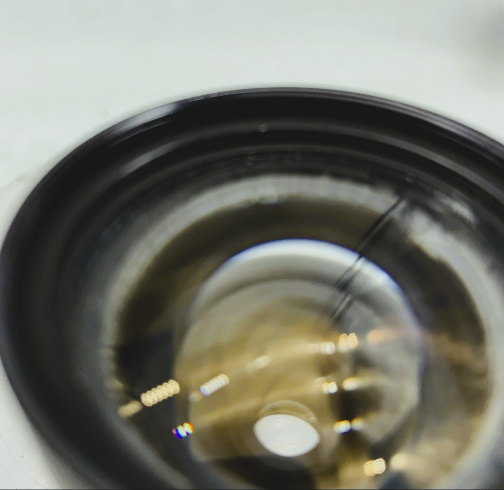
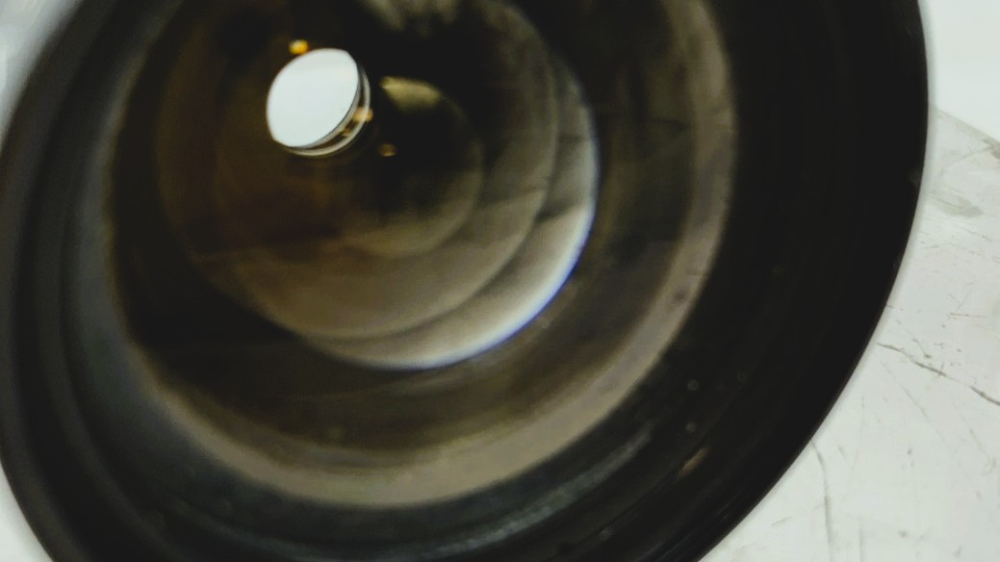
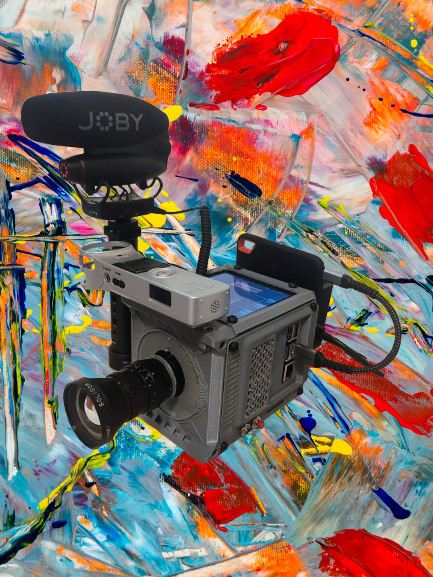
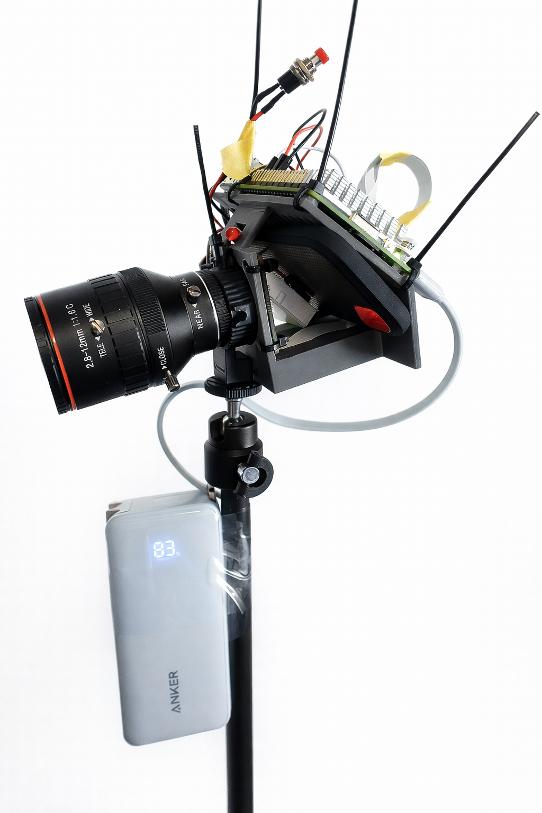
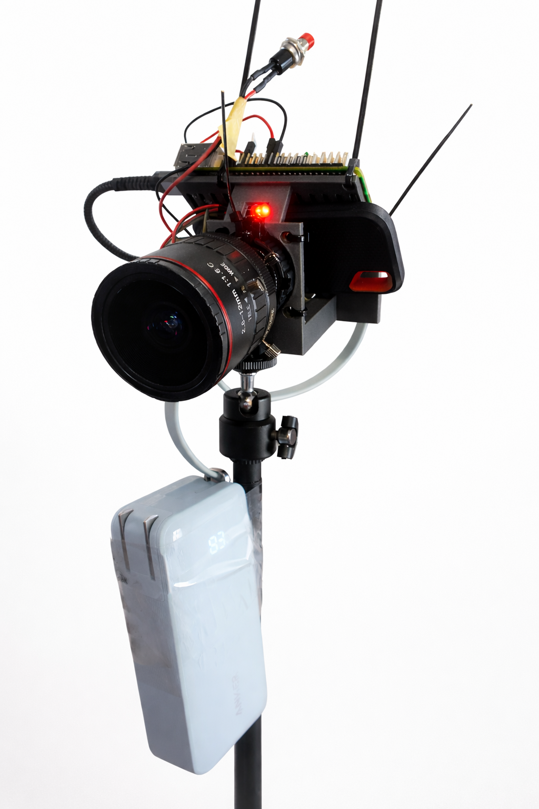

I've been wanting to build my own digital cinema camera for a while now. Not because I need one — I have access to plenty of cameras but because I wanted to learn. That curiosity led me to the CinePi project, an open-source digital cinema camera built around a Raspberry Pi. What started as "let me just try this(I was planning to make a warm farm but decided to invest on this better)" turned into Cine ROro, my own custom build.
This isn't a polished production tool. It is rough but cute. A learning device. And honestly, that's what makes it fun.
First Video Test
Here's the first footage captured with Cine ROro v1.2. Nothing fancy — just testing how the sensor handles light, how the vintage lens renders, and whether the whole thing actually works as a filmmaking tool. The color grading is still rough (I'm learning DaVinci Resolve as I go), but the image has a film vibes that I really like.
The Build
The heart of Cine ROro, Raspberry Pi 5 8GB running Cinemate 3.2 with the IMX477 sensor. The whole thing sits inside a 3D-printed enclosure designed by the CinePi community, which I printed on my Anycubic Kobra. The case took about 36 hours and only one fail to print and came out with some really nice structural detail. Cleaning was tedious, but maybe it was my fault on the sides, I used flat supports instead of trees, and the vents were rough..


Printing the v1.2 enclosure on the Anycubic Kobra. About 36 hours, sleeping in a different room, and a lot of patience.
For the lens, I'm using a vintage Cosmicar/Soligor 12.5mm television lens that I got cheap from Ebay. It has some fungus in it, which honestly I kind of not like it, But I guess it literary gives organic quality to the image that I wasn't expecting. Sometimes the best looks come from imperfections is this the case I don't know.


The Cosmicar 12.5mm — fungus and all. Looking through the front and rear elements.

Cine ROro v1.2 in all its glory. Art in front of art.
Camera Setup
From v1.0 to v1.2
v1.0 was the bare-bones start — just the Pi, the sensor, and a lens mounted on a tripod stick with an Anker power bank. No case, no audio, no monitor. Wires , tape holding things together of course ziptied. It looked like a science project, but it worked. That version proved the concept and gave me the confidence to invest in a proper build. Thanks to ExplainingComputers .


Cine ROro v1.0 — wires, tape, an Anker power bank.
v1.2 is where it starts feeling like an actual camera. The 3D-printed enclosure gives it structure. The NP-F battery system means I'm not tethered to a USB power bank anymore. The 4" LCD lets me to frame shots without an external monitor. And the Wavo PRO DS microphone plus Zoom H1 setup handles audio separately, which makes a massive difference in post.
It's still evolving. Future versions might explore different sensors, better lens adapters, XR who knows. But for now, v1.2 is the one making me capturing lights and that's what matters. I also got a gimbal(Old Cheap hope it work xD.)